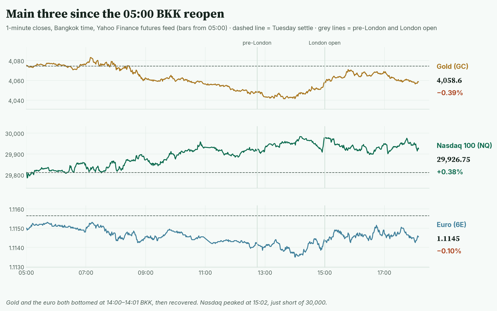
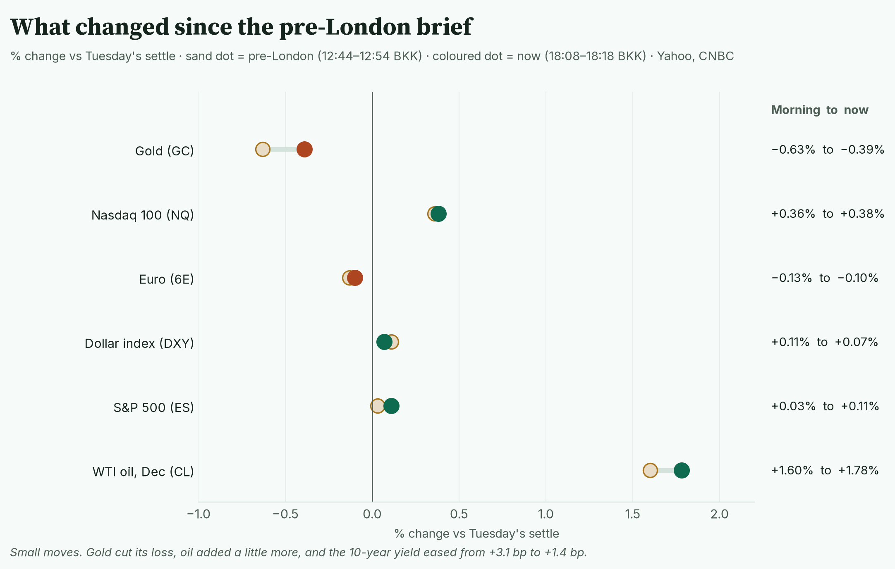
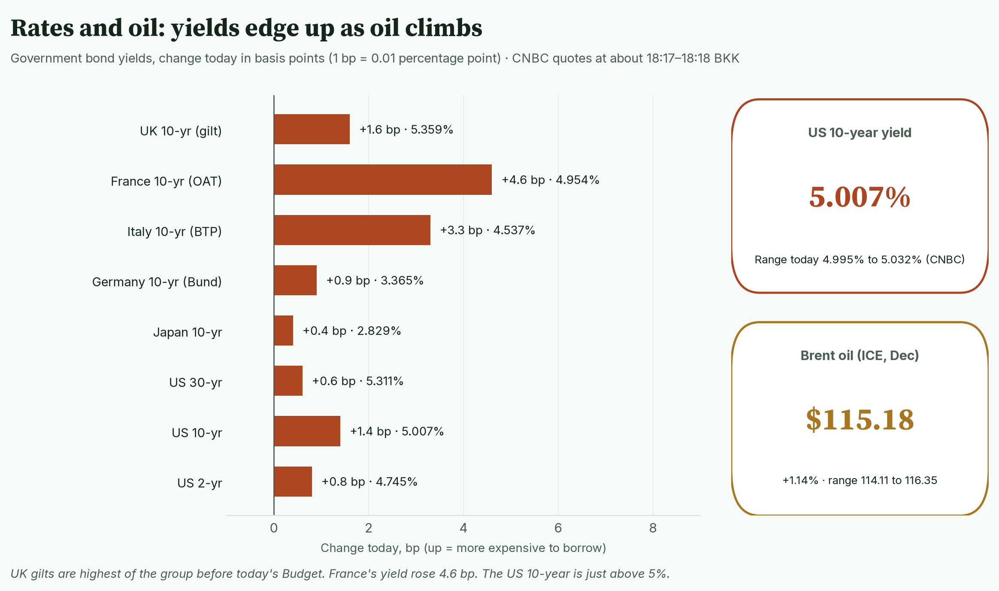
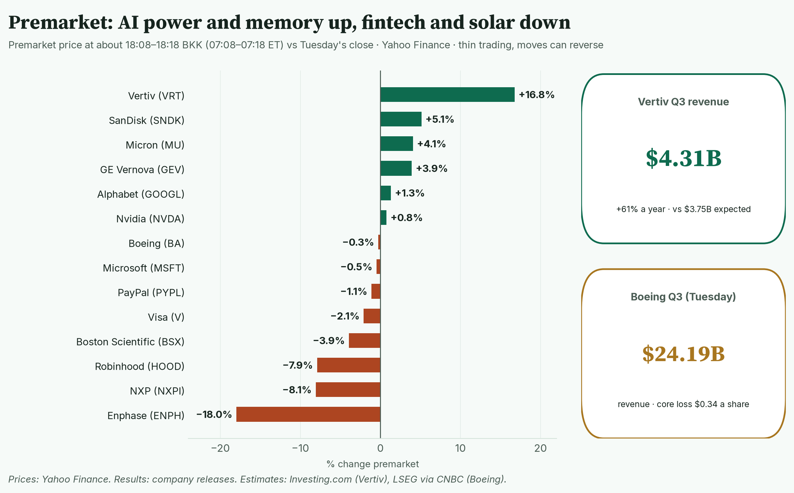
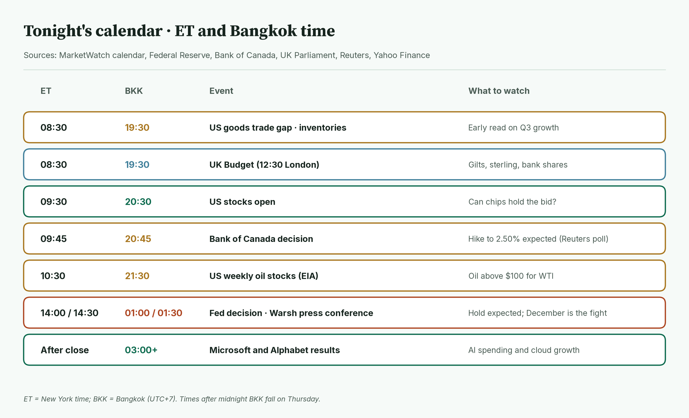
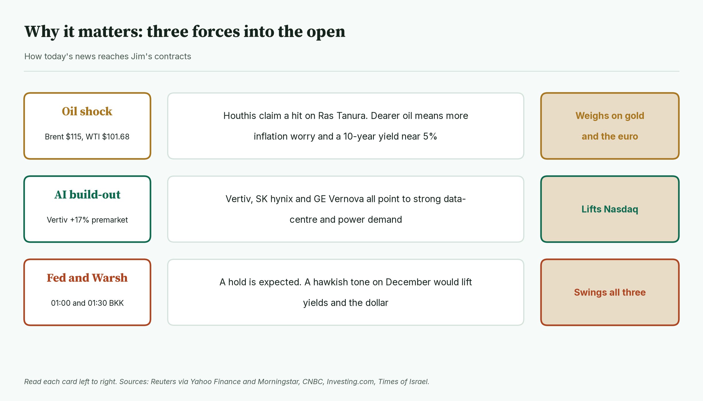
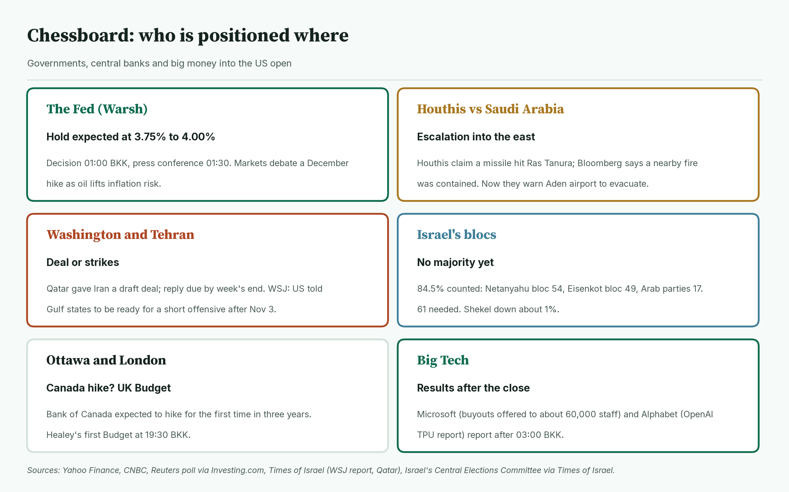
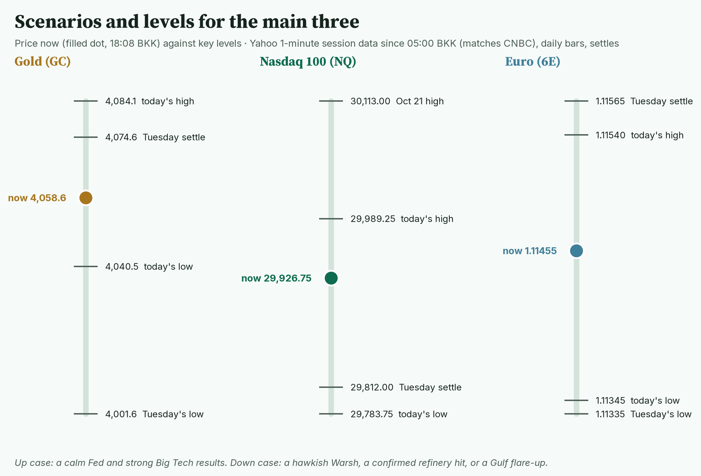
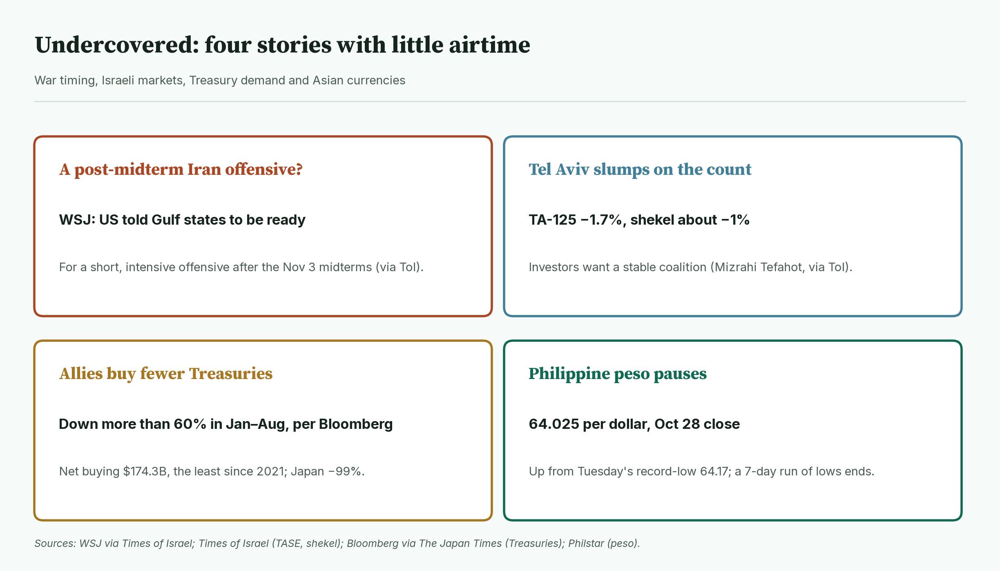
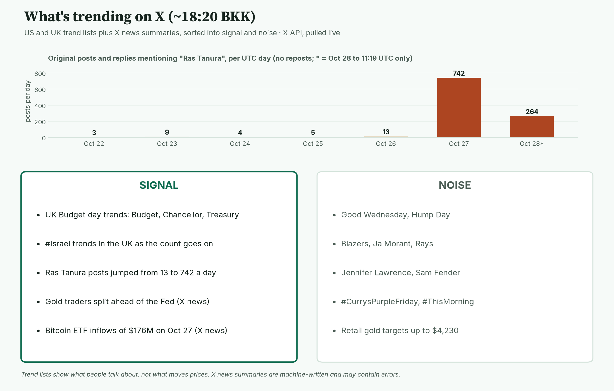

April · Market Intel, pre-NY · Wed Oct 28, 2026 · ~18:30 BKK / ~07:30 New York
Headline: Gold clawed back half its morning loss and sits at 4,058.6, −0.39%. Nasdaq futures hold near the day's high at 29,926.75, +0.38%. The euro is little changed at 1.11455, −0.10%.
So what: oil is still the pressure, AI is still the support. The Fed at 01:00 BKK and Warsh at 01:30 BKK decide the night. Microsoft and Alphabet follow after 03:00 BKK. Israel's count shows no majority for either bloc.
1) Main instruments The three main contracts on 1-minute bars since the 05:00 BKK reopen. Gold and the euro bottomed together just after 14:00 BKK. |
(Futures trade nearly around the clock, so they show the mood before stocks open. Quotes: Yahoo Finance futures feed at 18:08 BKK (07:08 New York), about 10 minutes delayed; they match CNBC. Ranges: 1-minute bars from the 05:00 BKK reopen to 18:08 BKK; today's bars start at 05:00. CNBC's session highs and lows match.)
- Gold futures (GC, Dec): 4,058.6, −0.39%, at 18:08 BKK. Driver: dearer oil feeds inflation worry and keeps yields high; gold pays no interest, so that hurts it (ANZ via CNBC/Reuters, this morning).
- Gold's range is 4,040.5 (14:01 BKK) to 4,084.1 (07:10 BKK). The low is new since pre-London (4,045.4).
- Re-checked: futures stayed well above Tuesday's low of 4,001.6 (Yahoo daily bars). Spot gold (the cash price) is 4,045.22, −0.31%, with a low of 4,029.89 (CNBC, 18:18 BKK). It did not go back under $4,000 today.
- Nasdaq 100 futures (NQ, Dec): 29,926.75, +0.38%, at 18:08 BKK. Driver: the AI build-out trade. SK hynix and Vertiv results lifted memory and data-centre names (Yahoo Finance, TipRanks).
- Nasdaq's range is 29,783.75 (05:02 BKK) to 29,989.25 (15:02 BKK). The high is new since pre-London. It cleared Tuesday's high of 29,881.25 but not 30,000.
- Euro futures (6E, Dec): 1.11455, −0.10%, at 18:08 BKK. Driver: oil. Europe imports most of its energy, so dearer oil hurts the euro. That link is my read, not a reported driver.
- The euro's range is 1.11345 (14:00 BKK) to 1.11540 (07:12 BKK). Re-checked: it held Tuesday's low of 1.11335 by two ticks (Yahoo daily bars).
- Spot euro is 1.1125 (CNBC, 18:18 BKK). Its low today, 1.1114 (CNBC), equals the 2026 low of about 1.1114 from Oct 14 (Yahoo daily bars). Yahoo's low today is 1.1117. So it tested the year's low but did not clearly break it.
- Takeaway: gold bounced off 4,040; Nasdaq stalled just below 30,000; the euro is pinned to its lows.
Context. The dollar index (DXY, the dollar against six major currencies) is 102.39, +0.07% (CNBC, 18:18 BKK), slightly below this morning's 102.43. The US 10-year yield (what the US government pays to borrow for 10 years) is 5.007%, up 1.4 basis points (CNBC, 18:17 BKK; a basis point is 0.01 percentage point). Its range today is 4.995% to 5.032%. The VIX (the "fear gauge" built from S&P 500 option prices) is 17.50, −0.11% versus Tuesday's close of 17.52 (CNBC, 18:18 BKK). US oil (CL, Dec) is 101.68, +1.78% (18:08 BKK), range 99.75 (05:17 BKK) to 102.24 (14:53 BKK). Brent (ICE, Dec) is 115.18, +1.14% (CNBC, 18:08 BKK), range 114.11 to 116.35 (CNBC; ICE trading, which opens at 08:00 BKK). NYMEX Brent (Jan, Yahoo) traded 109.38 (05:17 BKK) to 111.76 (14:52 BKK) since 05:00. S&P 500 futures (ES) are 7,767.00, +0.11% (18:08 BKK), range 7,752.25 (09:26 BKK) to 7,772.75 (17:45 BKK). Bitcoin is $81,238, +0.54% since 00:00 UTC (Yahoo, 18:18 BKK).
2) Top signals: what changed since pre-London Each line runs from the 12:44–12:54 BKK reading to 18:08–18:18 BKK. Gold recovered; everything else barely moved. |
- Gold recovered. It went from −0.63% to −0.39% after a 14:01 BKK low. (High: Yahoo, CNBC)
- Yields eased a little. The 10-year went from +3.1 bp to +1.4 bp. (High: CNBC)
- Israel's count firmed up. No bloc has a majority (details in section 7). (High: Central Elections Committee via Times of Israel)
- Vertiv jumped about 17% premarket on a big beat. (High: Yahoo prices; Investing.com)
- Takeaway: a quiet afternoon. Traders are waiting for the Fed.
3) Rates, FX and oil Change in 10-year and other government yields today, CNBC at about 18:17–18:18 BKK. All rose a little; France and Italy rose the most. |
- US 2-year 4.745%, +0.8 bp. 10-year 5.007%, +1.4 bp. 30-year 5.311%, +0.6 bp (CNBC, 18:17–18:18 BKK).
- Mentor: bond prices fall when yields rise. Dearer oil means more inflation worry, so lenders want more interest.
- UK gilts are in focus. The 10-year gilt is 5.359%, +1.6 bp before today's Budget (CNBC). Chancellor John Healey speaks at about 12:30 London, 19:30 BKK (UK Parliament).
- France's 10-year rose 4.6 bp to 4.954% (CNBC, 18:18 BKK).
- FX: the yen is 157.90 per dollar (CNBC, 18:18 BKK). Israel's shekel weakened about 1% to around 3.084 per dollar on the election deadlock (Times of Israel).
- Oil: the Houthis say a missile hit Saudi Arabia's Ras Tanura refinery. Saudi Arabia has not confirmed damage; Bloomberg says a nearby fire was contained (Reuters via CNBC, this morning). The Houthis are now telling people to leave Aden airport in Yemen (Times of Israel).
- Takeaway: 5% on the 10-year still holds. Oil is the reason.
4) Premarket earnings Premarket moves at about 18:08–18:18 BKK versus Tuesday's close (Yahoo). AI power and memory up; fintech and solar down. |
- Vertiv: +16.8%. Revenue $4.31B, up 61%, versus $3.75B expected. Adjusted EPS (earnings per share, excluding one-offs) $2.21 versus $1.82. It raised its full-year guidance. (High: company release; estimates from Investing.com)
- GE Vernova: +3.9%. Revenue $12.6B, up 27%. Orders $29B. It raised 2026 guidance and doubled its buyback plan to $20B. (High: company release)
- Boston Scientific: −3.9%. Sales $5.138B, up 1.5%. Adjusted EPS $0.73, down from $0.75. It expects fourth-quarter sales to fall 1% to 3%, citing an August cyberattack. (High: company release)
- Memory names extend gains: SanDisk +5.1%, Micron +4.1% (Yahoo), after SK hynix's record quarter.
- Enphase: −18.0%. Adjusted EPS $0.41 versus $0.51 expected; revenue $293.3M versus about $304M. It guided fourth-quarter revenue to $225M–$255M, far below forecasts near $300M. (High: company 8-K; Investing.com, Benzinga)
- Robinhood −7.9%, NXP −8.1%, Visa −2.1% after Tuesday's after-hours results. Robinhood's EPS was $0.51 against $0.55 expected (Benzinga via Yahoo Finance).
- PayPal (reported Tuesday; checked at source): −1.1% premarket. Revenue $8.584B, up 2% (1% without currency effects). Adjusted EPS $1.45, up 8%. It raised full-year adjusted EPS guidance to about $5.60 from about $5.38. (High: PayPal release filed with the SEC)
- Boeing (reported Tuesday; checked at source): −0.3% premarket. Revenue $24.19B ($24,188M), up 4%. Core loss (Boeing's adjusted measure) $0.34 a share, against an expected $0.21 loss (LSEG via CNBC). GAAP loss $0.26 a share. (High: Boeing release, SEC 10-Q, CNBC) The stock fell about 10.7% on Tuesday after it said it will miss its 2026 target for 737 deliveries (Investing.com, CNBC).
- Takeaway: anything tied to AI power and memory is bid; consumer finance and solar are not.
5) US calendar tonight (ET and BKK) Wednesday's schedule in New York and Bangkok time. Data is light; the central banks are not. |
- 08:30 ET / 19:30 BKK: US goods trade gap, wholesale and retail inventories (MarketWatch). An early read on third-quarter growth.
- 08:30 ET / 19:30 BKK: UK Budget (12:30 London; UK Parliament).
- 09:30 ET / 20:30 BKK: US stocks open.
- 09:45 ET / 20:45 BKK: Bank of Canada. A hike to 2.50%, its first in three years, is expected (Reuters poll; US News). Not yet decided.
- 10:30 ET / 21:30 BKK: US weekly oil stocks (EIA).
- 14:00 ET / 01:00 Thu BKK: Fed decision. A hold at 3.75% to 4.00% is expected. Chair Warsh speaks at 14:30 ET / 01:30 BKK (Yahoo Finance, Fed calendar).
- After the close (from about 03:00 Thu BKK): Microsoft and Alphabet.
- Takeaway: 01:00 and 01:30 BKK are the deciders. Big Tech comes right after.
6) Why it matters Three forces and how each reaches the main contracts. |
- Oil weighs on gold and the euro. It keeps inflation fears and yields up.
- AI spending lifts Nasdaq. Vertiv, SK hynix and GE Vernova all report strong demand.
- The Fed can swing all three. A hawkish tone (leaning toward higher rates) on December would lift the dollar and hurt gold and the euro.
- Takeaway: a calm Warsh helps gold and the euro most; a hawkish one hurts them most.
7) Chessboard Six players into the US open. The Fed and the Gulf can move gold fastest. |
- The Fed: a hold is expected. CME FedWatch (a tool that reads rate odds from futures prices) showed about 84% odds of a December hike this morning (CNBC/Reuters; not re-checked since). (High)
- Houthis vs Saudi Arabia: attacks have moved to Saudi Arabia's oil heartland in the east. Damage at Ras Tanura is unconfirmed. (High that the claim was made)
- Washington and Tehran: Qatar gave Iran a new draft deal; a reply is expected by week's end, though an Iranian official has disputed the report (RFE/RL). The WSJ reports the US told Gulf states to be ready for a short, intensive offensive after the Nov 3 midterms. (Medium: via Times of Israel)
- Israel: with 84.5% of ballot boxes counted (12:34 Israel time, 17:34 BKK), Netanyahu's bloc has 54 seats, Eisenkot's bloc 49, and the Arab-led parties 17. A majority needs 61. About 600,000 absentee "double envelope" votes, mostly soldiers, are counted later, possibly by Friday. (High: Central Elections Committee via Times of Israel)
- Ottawa and London: Canada is expected to hike. Healey's first Budget lands at 19:30 BKK. (High: Reuters poll, UK Parliament)
- Big Tech: Microsoft has offered voluntary buyouts to about 60,000 eligible staff (High: Microsoft blog, CNBC). Alphabet is up premarket on a report that OpenAI plans to buy Google's AI chips (Medium: The Information via Reuters).
- Takeaway: the Fed is scheduled risk; the Gulf is unscheduled risk.
8) Scenarios and levels Price now against today's key levels. Gold is mid-range; the euro is near its floor. |
- Up case: a calm Warsh and strong Big Tech results. Gold retakes Tuesday's settle of 4,074.6, then 4,084.1. Nasdaq clears 29,989.25 and 30,000; the Oct 21 high of 30,113.00 is next. The euro gets back above 1.11540.
- Down case: a hawkish Warsh, confirmed refinery damage, or a Gulf flare-up. Gold breaks 4,040.5; Tuesday's low of 4,001.6 is next. Nasdaq loses 29,812.00, then 29,783.75. The euro breaks 1.11335, and spot breaks its 2026 low near 1.1114.
- Takeaway: 4,040.5 for gold and 1.11335 for the euro are the lines that matter. This is a framework, not a forecast.
9) Undercovered Four stories with little airtime: war timing, Israeli markets, Treasury demand and the peso's pause. |
- A post-midterm Iran offensive? The WSJ says the US told Gulf states to get ready. (Medium: via Times of Israel)
- Tel Aviv fell on the count. The TA-125 index dropped 1.7% and the shekel about 1%. (High: Times of Israel)
- US allies bought fewer Treasuries. The most US-aligned countries made net purchases of $174.3B of Treasuries (excluding bills) in January to August, down more than 60% from a year earlier and the least since 2021. Japan's buying fell 99%; South Korea was a net seller. (High: Bloomberg via The Japan Times)
- The Philippine peso paused after a run of record lows. It closed Wednesday at 64.025 per dollar, up 14.5 centavos from Tuesday's record-low 64.17 and ending seven straight record-low closes. (High: Philstar)
10) What's trending on X (~18:20 BKK) Daily posts mentioning Ras Tanura, plus today's trends sorted into signal and noise. Posts jumped from 13 on Oct 26 to 742 on Oct 27. |
- US: Good Wednesday, Hump Day, Blazers, Jennifer Lawrence, Ja Morant, Rays.
- UK: Budget, Chancellor, Treasury, Martin Lewis, #Israel, Sam Fender.
- Signal: UK Budget day dominates UK trends. X stories say Healey will scrap gas standing charges and keep the £20,000 cash ISA limit. Those are pre-Budget reports, not yet announced. (Medium: The Guardian, FT, This is Money)
- Signal: X finance stories focus on gold traders split before the Fed, and $176M of US spot Bitcoin ETF inflows on Oct 27 (flow data via TokenPost). (Medium: X news summaries)
- Data point: original posts and replies on "Ras Tanura" rose from 13 on Oct 26 to 742 on Oct 27, and 264 so far today (X post counts, UTC days).
- Noise: one X story cites gold "resistance up to $4,230". That is far from today's range; treat it as opinion.
- Noise: sports, celebrities, shopping promotions.
Bottom line
A holding pattern before the Fed, with oil leaning on gold and the euro and AI holding up Nasdaq. For Jim: gold at 4,058.6 bounced from 4,040.5; 4,074.6 and 4,084.1 are the ceilings, 4,001.6 the deeper floor. Nasdaq at 29,926.75 needs 29,989.25 and 30,000; 29,812.00 is first support. The euro at 1.11455 is 0.0012 above Tuesday's low of 1.11335, which held by two ticks at 14:00 BKK; spot's 2026 low near 1.1114 is the bigger line. Interpretive note: on Fed days, markets often stay quiet until the decision. A confirmed refinery hit could break that sooner. That is a read, not a forecast.
Confidence: Futures levels: high for direction, medium-high for the exact tick (Yahoo feed, about 10 minutes delayed; ranges match CNBC). Yields, spot gold, spot euro, Brent, DXY, VIX: CNBC, time-stamped. Euro driver: my read. Fed odds: from this morning, not re-checked. PayPal and Boeing: checked against company releases and SEC filings. Israel: partial official count, not final. Vertiv, GE Vernova, Boston Scientific, Enphase: company releases. Treasury-buying story: Bloomberg via The Japan Times. Budget measures: pre-Budget press reports. |